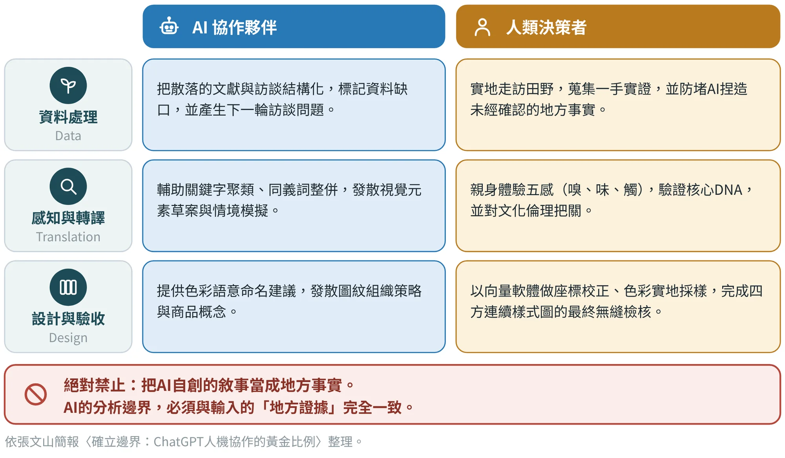
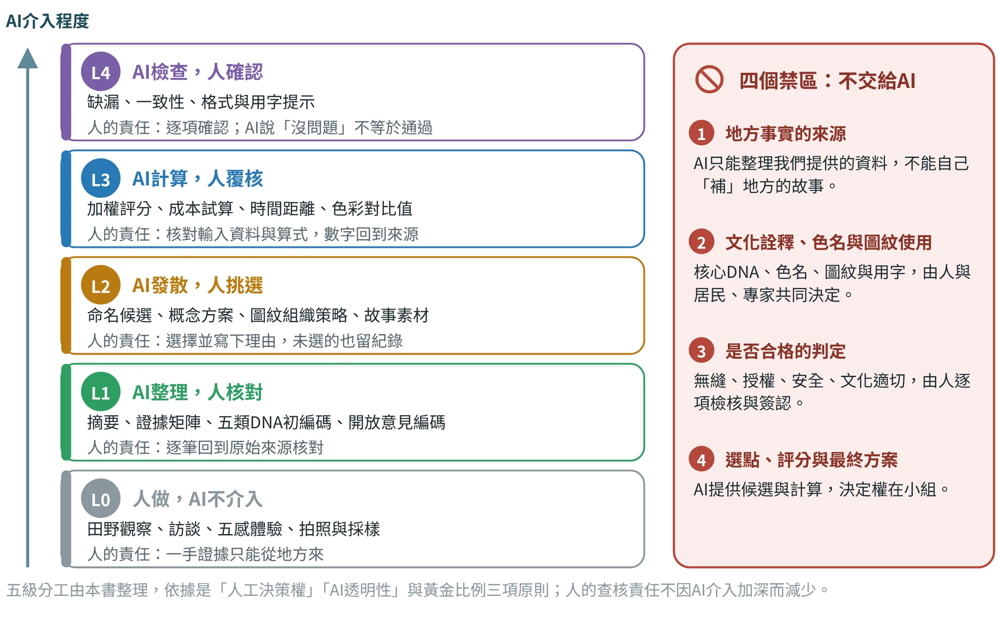
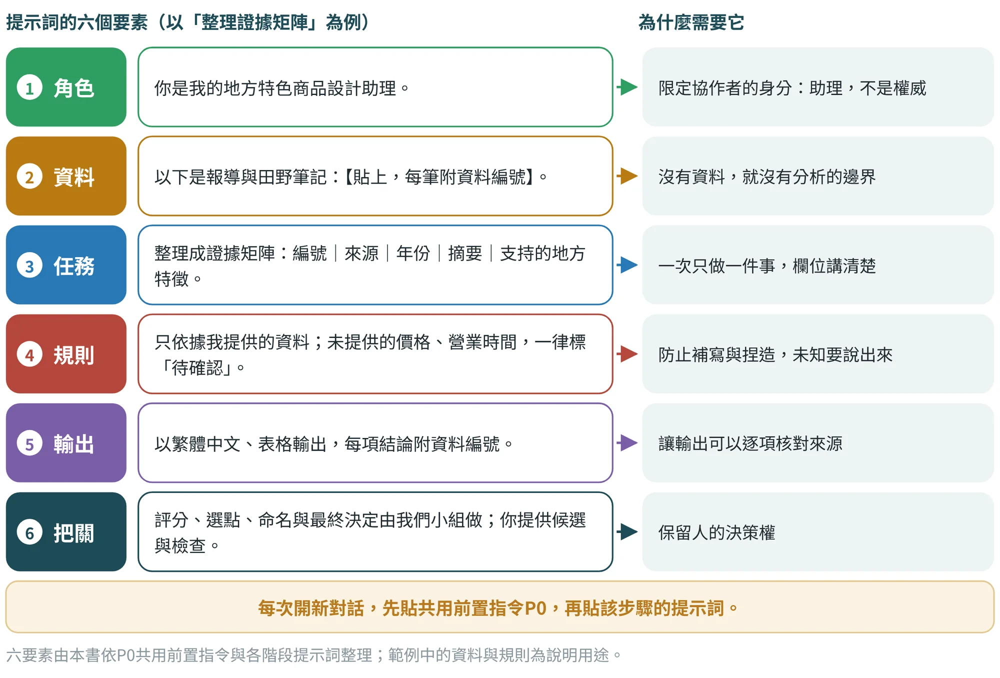
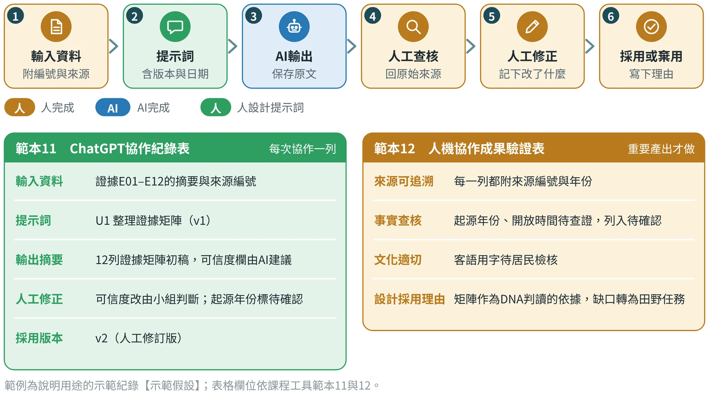

人機協作的原則與分工
AI是協作夥伴，不是地方事實的來源，也不是最後的決策者

13.1AI在地方設計裡的三個風險#
生成式AI能在幾秒內把一堆資料整理成表、寫出一段文案、畫出一張圖，對學習中的設計者非常有吸引力。但「地方」這件事，恰好是AI最容易出錯、而錯了代價最高的領域。本書把風險歸納為三種：
- 捏造。 AI寫出來的地方故事流暢而且合理，卻可能沒有任何來源；一旦被印上包裝或導覽稿，就成了「地方事實」。
- 抹平。 AI傾向給出最常見的說法與意象，容易把一個地方的特殊性磨成「常見的老街」「常見的竹編」，而地方DNA的價值，恰恰在於獨特。
- 越權。 AI給的答案看起來像結論，使人省略判斷與驗證，把本該由居民、專家或小組決定的事，交給了模型。
因應方式不是不用AI，而是先訂出邊界。本書採用一條簡單而嚴格的原則：AI的分析邊界，必須與輸入的「地方證據」完全一致。 資料裡有的，AI可以整理；資料裡沒有的，AI必須標「待確認」，而不是自己補上。
13.2黃金比例：AI協作夥伴與人類決策者#
在資料處理、感知與轉譯、設計與驗收三個工作面向，AI與人各有擅長（圖13.1）。AI擅長把大量文字結構化、聚類與發散；人擅長親身到場、感受、驗證與負責。兩者不是誰取代誰，而是前者放大後者的產能，後者替前者劃定界線。

13.3五級分工與四個禁區#
黃金比例告訴我們大方向；實際作業時，需要更細的判斷。本書把AI的參與程度分成五級，由L0到L4，AI介入愈深，人的查核責任並不減少（圖13.2）。右側四個禁區，則是不論哪一級都不能交給AI的事。
面對一項工作，可以用三個問題判斷能不能交給AI：
- 答案在不在我提供的資料裡？ 在，AI可以整理（L1）；不在，只能回到田野、訪談或文獻去取得（L0）。
- 錯了的代價是什麼？ 若牽涉文化禁忌、授權、安全或對居民的失禮，由人決定，AI最多只能提供候選。
- 結果能不能回到來源核對？ 能，才可以採用；不能核對的輸出，不論多漂亮，都不能當成證據。

13.4六階段的AI分工#
把五級分工放回六個階段，就得到每個階段AI可以做什麼、人必須做什麼，以及不可以交給AI的事（表13.1）。這張表是整本書的AI協作地圖，各章的提示詞都落在「AI可以做」欄。
| 階段 | AI可以做 | 人必須做 | 不可以交給AI |
|---|---|---|---|
| 1證據蒐集 | 把文獻、田野與訪談資料整理成證據矩陣；標記缺口；產生下一輪訪談與觀察問題 | 蒐集一手資料；評可信度；查證矛盾 | 補寫未提供的地方事實；推測年份與數字 |
| 2 DNA萃取 | 五類DNA初步編碼、同義詞整併、跨來源比對，每項附證據與待確認處 | 判定核心／次核心／延伸層級；與居民確認 | 自行決定主題軸；用一般常識補寫故事 |
| 3感知與語意 | 五感分類、情緒與意義摘要、文化語彙聚類 | 現場體驗五感；居民檢核用字與讀音 | 創造民俗說法或客語詞彙 |
| 4視覺轉譯 | 形、色、材、質、構成的候選；圖紋組織策略與變體；色彩語意命名建議 | 採樣、選擇與繪製；向量校正與無縫檢核；色名與圖紋使用的決定 | 判定「已經無縫」；複製傳統圖像 |
| 5應用原型 | 發散商品與遊程概念；DNA—需求—方案對照；評分與成本的計算 | 評分、選點、命名與最終方案；報價與合作確認 | 估價；補寫營業時間與交通資訊 |
| 6驗證迭代 | 彙整量表與開放意見；起草改版矩陣；保留少數意見 | 找受測者與現場測試；判斷文化適切；決定改版 | 虛構受測者回饋；宣告「已改好」 |
依張文山〈地方DNA設計轉譯：研究方法、研究工具、設計工具與ChatGPT協作彙整表〉各階段「ChatGPT協作」欄與品質規範整理。
13.5提示詞的六個要素與共用前置指令P0#
好的提示詞不是越長越好，而是把六件事交代清楚：角色、資料、任務、規則、輸出與把關（圖13.3）。其中「資料」與「規則」決定AI的分析邊界，「把關」決定誰擁有最後的決定權。
為了避免每次都要重新寫規則，本課程把共通的規則寫成「共用前置指令P0」：每次開新對話，先貼P0，請AI複述規則，確認它「讀進去」了，再貼該步驟的提示詞。下面是通用版；商品設計版與遊程版各自在規則與角色上有一些差別（表13.2），全文收在附錄B。
你是我的地方設計研究助理，請全程遵守：①只依據我提供的資料回答，不補寫未提供的地方事實；②價格、成本、產能、法規、營業時間、交通、距離與聯絡方式，凡我沒提供的一律標「待確認」，不可推測；③每項結論註明資料來源（資料編號或原句）；④評分、選點、命名、概念選擇與最終決定由我們小組做，你提供候選、計算與檢查；⑤不直接複製傳統圖像、宗教或族群符號，也不仿冒他人品牌；⑥以繁體中文、表格為主輸出。
場域：【場域名稱】；主題假設：【主題】。請先複述以上規則，再等我貼資料。
P0依張文山〈地方特色商品設計流程與示範說明書〉與〈地方深度體驗遊程設計流程與示範說明書〉的共用前置指令綜合改寫；原版全文見附錄B。
| 項目 | 商品設計版 | 遊程版 | |
|---|---|---|---|
| 角色 | 地方特色商品設計助理 | 地方深度體驗遊程設計助理 | |
| 規則條數 | 六條 | 五條 | |
| 待確認項目 | 價格、成本、產能、最小訂量、法規與聯絡方式 | 營業時間、交通、距離、費用與聯絡方式 | |
| 特有規則 | 不直接複製傳統圖像、宗教或族群符號，也不仿冒他人品牌 | ——（故事稿只使用POI資料表中有來源的事實） | |
| 場域欄位 | 場域名稱；商品主題假設 | 場域名稱；遊程主題假設 | |
常見錯誤 初學者容易犯的錯 把資料與問題一次貼進去，卻沒有規則：AI會用常識把空白補滿，補的內容看起來像資料。 只說「幫我寫一段竹山的故事」：沒有資料、沒有邊界、沒有來源，輸出無法核對。 把AI的建議直接當成評分或選點結果：決定權要留在小組，AI只提供候選與計算。 同一個對話拖很久、一路追問：前面的規則會被稀釋，重要的步驟要開新對話並重貼P0。 | |||

13.6協作紀錄：讓人機協作可以重現#
每一次協作都要留下紀錄：輸入了什麼資料、用了哪個提示詞、AI輸出了什麼、人查核與修正了什麼、最後採用哪個版本（圖13.4）。紀錄的用意有三個：讓別人看得懂你是怎麼得到這個結果的；讓錯誤可以被追查；也讓老師與居民知道哪些內容經過人的把關。
紀錄用兩份範本分工：範本11「ChatGPT協作紀錄表」每次協作記一列，欄位是輸入資料、提示詞、輸出摘要、人工修正與採用版本；範本12「人機協作成果驗證表」只對重要產出（例如DNA判讀、色名、圖紋、商品文案、遊程腳本）進行，欄位是來源可追溯、事實查核、文化適切與設計採用理由。
檔案與版本的命名也要讓人看得懂。建議用「階段＿提示詞代碼＿版本＿日期」的格式，例如「S2＿U1＿v2＿日期」，並保留AI輸出的原文與人工修訂版兩份；AI生成的圖像另外註記工具與用途，不與設計師自己繪製的向量檔混放。
